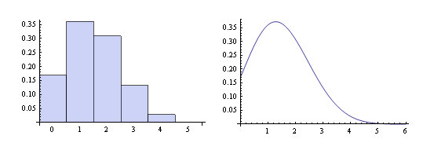
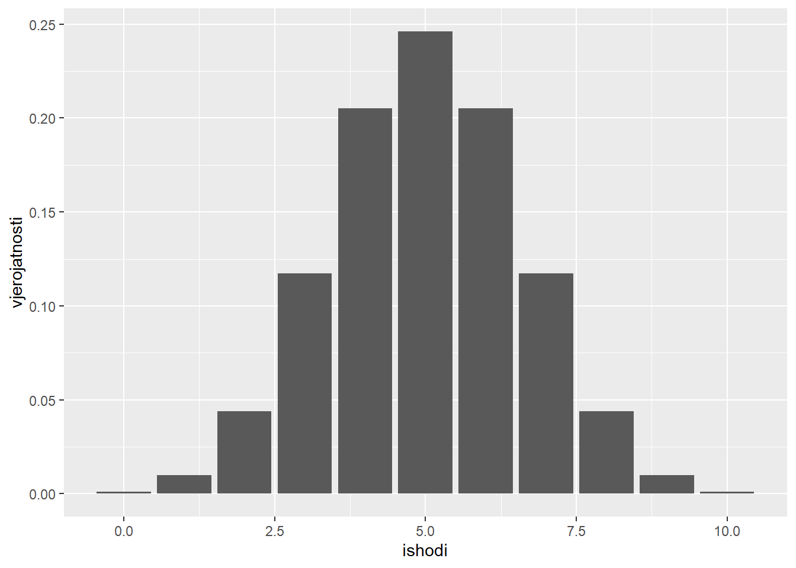
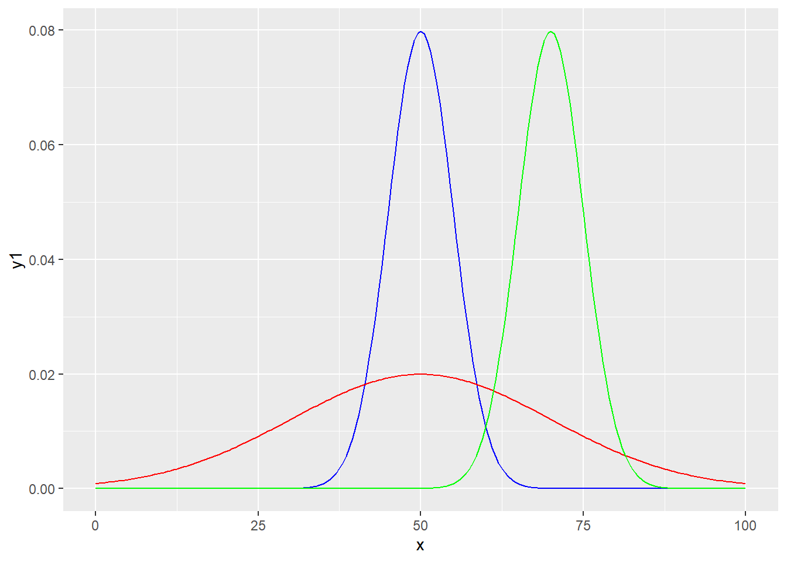
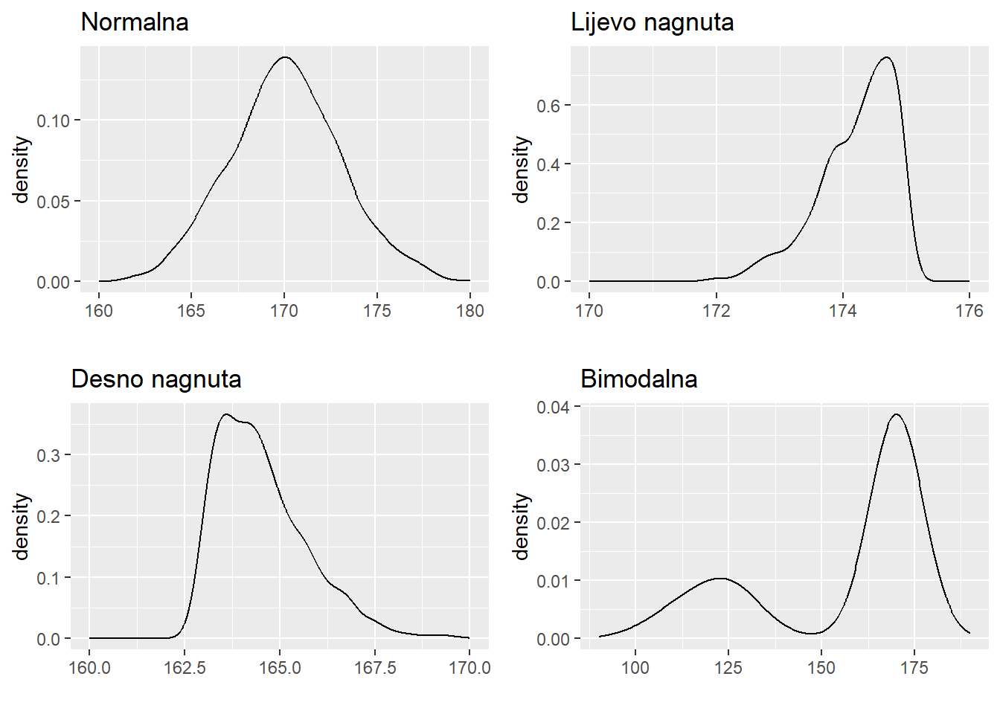
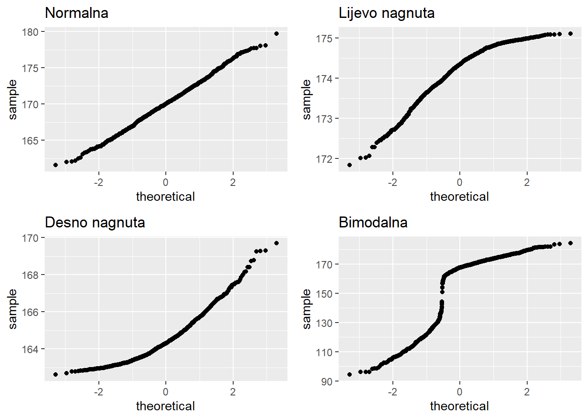

13 Razdiobe i simulacije
R se između ostalog definira kao jezik za “statističko programiranje” što znači da je jedna od njegovih osnovnih funkcija omogućiti provođenje statističkih analiza. Za razliku od drugih programskih jezika, za R se često kaže da je stvoren “od statističara, za statističare”, što znači da usprkos činjenici da je R kao jezik uvelike napredovao i evoluirao od svojih početaka kao izvedenice jezika S, statistika je i dalje u srži samog jezika a R kao takav sadrži iznimno bogatu podršku orijentiranu upravo statističarima i njihovim potrebama.
Cilj lekcije koja slijedi nije naučiti čitatelja statistiku. Budući da se radi o kompleksnom i relativno zahtjevnom znanstvenom polju za bilo kakav svrsishodan pregled trebalo bi daleko više prostora od onoga koji imamo ovdje na raspolaganju. Ideja lekcije jest primarno prikazati funkcije rada sa razdiobama, objasniti osnove provedbe simulacija te objasniti neke osnovne metode deskriptivne i inferencijalne statistike uz naglasak na njihovo provođenje kroz programski jezik R. Čitatelji koji nisu upoznati sa statistikom mogu lekciju koristiti kao prvi korak prema upoznavanju svijeta statistike, dok oni koji upravljaju znanjem barem osnovnih statističkih metoda mogu saznati kako neke poslove (koje su možda obavljali uz pomoć nekih drugih alata) mogu izvršavati programski uz pomoć podrške koju nudi jezik R.
Kao puno opsežniji uvod u statistiku snažno preporučujemo knjigu “OpenIntro Statistics” (Diez, Barr, and Çetinkaya-Rundel 2015). Važno je napomenuti da knjiga ima i svoj prateći CRAN paket, zvan ‘openintro’, koji omogućuje paralelno čitanje knjige i rješavanje zadanih problema direktno u R-u na istim podatkovnim skupovima koji se referenciraju u knjizi.
13.1 Generiranje slučajnih brojeva
Generatori slučajnih brojeva (eng. random number generators – RNG) su programski algoritmi koji se koriste za stvaranje nizova brojeva koji nemaju prepoznatljiv uzorak. Upotrebljavaju se u kriptografiji, simulacijama, igrama na sreću, statističkim analizama i mnogim drugim područjima gdje je potrebno simulirati neizvjesnost, odnosno nepredvidljivost. Zbog hardverskih ograničenja većina računala nije u mogućnosti stvarati brojeve koji su zaista nasumični, već koristi tzv. pseudoslučajne brojeve, koji se generiraju pomoću matematičkih algoritama i početne vrijednosti (engl. seed). Iako ti brojevi izgledaju nasumično te se kao takvi mogu koristiti u velikom broju scenarija, oni su zapravo deterministički – ako algoritam inicijaliziramo sa istom vrijednosti, dobiti ćemo isti niz. Ovo svojstvo je često korisno, budući da olakšava ponovnu iskoristivost analitičkih procedura, gdje korištenjem iste inicijalne vrijednosti možemo replicirati nečiju analizu usprkos tome što se ista zasniva na slučajnim brojevima.
Osnovnu funkciju za generiranje slučajnih brojeva sample smo već upoznali. Podsjetimo se kako ona izgleda
sample(x, size, replace = FALSE, prob = NULL)U potpisu funkcije x je vektor iz kojeg slučajno odabiremo vrijednosti, size je željenja veličina niza, replace parametar opisuje želimo li odabir sa ponavljanjem ili bez (TRUE znači da ista vrijednost može biti odabrana više puta). Konačno, parametar prob omogućuje da odredimo razdiobu vjerojatnosti elemenata - ako ga ostavimo na nazivnoj vrijednosti NULL vjerojatnosti će biti jednake, alternativno možemo dati vektor razdiobe iste duljine kao i vektor kojeg uzorkujemo. Suma vjerojatnosti unutar ovog vektora ne mora biti 1, možemo odabrati bilo koje pozitivne realne brojeve, algoritam će ih automatski normalizirati.
Zadatak 13.1 - Funkcija sample
# inicijaliziramo algoritam generiranja slučajnih brojeva sa vrijednosti 1234
set.seed(1234)
# ispišite 5 brojeva iz intervala od 1 do 10, odabiranih bez ponavljanja
# reinicijalizirajte algoritam sa vrijednosti 1234 i ponovite gornji upit
# odaberite 20 brojeva iz intervala od 1 do 10 (sa ponavljanjem), ali omogućite da brojevi od 1 do 5
# imaju sedam puta veću vjerojatnost pojavljivanja od brojeva od 6 do 10set.seed(1234)
sample(x = 1:10, size = 5)
set.seed(1234)
sample(1:10, 5)
sample(1:10, size = 20, replace = T, prob = c(rep(7, 5), rep(1, 5))) ## [1] 10 6 5 4 1
## [1] 10 6 5 4 1
## [1] 5 1 5 5 4 6 4 3 4 4 4 4 4 4 2 2 4 3 5 6Uz pomoć funkcije sample možemo raditi jednostavne simulacije slučajnih događaja gdje događaje modeliramo uz pomoć odgovarajućeg vektora (npr. novčić može biti logički vektor c(T, F), gdje TRUE označava glavu, kockica može biti numerički vektor 1:6). Simulacijom možemo provjeriti zakon velikih brojeva koji kaže da se velikim brojem ponavljanja eksperimenta omjer broja pojavljivanja događaja i ukupnog broja eksperimenata približavamo stvarnoj vjerojatnosti događaja.
Zadatak 13.2 - Jednostavna simulacija bacanja kockice
# uz pomoć funkcije `sample` simulirajte bacanje kockice 10, 100 i 10000 puta
# za svaki od skupova bacanja ispišite koliko puta ste dobili broj 6
# ponovite eksperiment nekoliko puta i objasnite rezultatsample(1:6, 10, replace = TRUE) %>% `==`(6) %>% mean
sample(1:6, 100, replace = TRUE) %>% `==`(6) %>% mean
sample(1:6, 10000, replace = TRUE) %>% `==`(6) %>% mean## [1] 0.1
## [1] 0.24
## [1] 0.1642Očekivana vjerojatnost je 0.166667, tj. 16.67%, ali eksperimentalna vrijednost će se konzistentno približavati očekivanoj tek za veći broj bacanja.
Vidjeli smo kako u funkciji sample uz parametar probs kontroliramo razdiobu vjerojatnosti ishoda. Razdiobe su temeljni koncept u statistici jer opisuju kako su vjerojatnosti raspoređene među mogućim ishodima nekog događaja. One omogućuju razumijevanje ponašanja podataka, procjenu vjerojatnosti određenih događaja i donošenje zaključaka na temelju uzorka.
13.2 Rad sa razdiobama vjerojatnosti u jeziku R
U ovom dijelu lekcije prikazat ćemo podršku jezika R za rad sa različitim razdiobama vjerojatnosti. Važno je naglasiti da se ovdje nećemo baviti temeljitim pregledom teorije vezanim uz pojmove razdiobe vjerojatnosti diskretne i kontinuirane slučajne varijable (već spomenuti izvor “OpenIntro Statistics” može pružiti vrlo kvalitetan uvod ove tematike). Cilj lekcije koja slijedi primarno je prikazati što jezik R - ili konkretnije paket stats - nudi kao podršku za lak i učinkovit rad sa razdiobama.
Kao što smo naveli u prethodnom dijelu, pojam razdiobe vjerojatnosti predstavlja funkciju koja opisuje vjerojatnost pojave nekog slučajnog događaja. Tako kod bacanja novčića imamo dva moguća ishoda - “pismo” ili “glava”, a ako je novčić regularan vjerojatnost pojedinog ishoda jest 0.5, tj. 50%. Zbroj brojeva kod bacanja dvije kockice može biti od 2 do 12, pri čemu svi ishodi nemaju istu vjerojatnost; npr. broj 7 ima najveću vjerojatnost (17%) dok 2 i 12 imaju najmanju (samo 3%).
Možemo razlikovati diskretne i kontinuirane razdiobe vjerojatnosti, u ovisnosti o tome da li je skup mogućih ishoda nekog slučajnog događaja konačan ili beskonačan (gdje pod “beskonačnosti” uglavnom mislimo na primanje vrijednosti iz beskonačnog skupa realnih brojeva).

Slika 13.1: Diskretna i kontinuirana razdioba
Kod diskretnih razdiobi uglavnom razmatramo vjerojatnost pojave nekog od ishoda, npr. ako slučajni događaj označimo sa slučajnom varijablom \(X\), a jedan od mogućih ishoda sa \(x\), onda nam funkcija razdiobe odgovara na pitanje koliko je:
\[P(X = x)\]
Ovu vjerojatnost možemo direktno očitati iz grafa funkcije razdiobe pogledom na vrijednost na y osi za odabrani ishod na x osi.
Za kontinuirane razdiobe ovo pitanje ne možemo postaviti, budući da je zbog beskonačnosti skupa ishoda vjerojatnost bilo kojeg ishoda jednaka nuli - drugim riječima, vrijednost na y osi ne odgovara vjerojatnosti određenog ishoda, zbog čega ovakvu funkciju i zovemo funkcija gustoće razdiobe, a ne funkcija razdiobe kao kod diskretnih slučajnih varijabli. Pitanje na koje možemo odgovoriti jest koja je vjerojanost da ishod bude unutar određenog intervala, npr. za slučajni događaj opisan varijablom \(X\) i vrijednosti \(a\) i \(b\) preko grafa gustoće razdiobe možemo pronaći:
\[P(a \lt X \lt b)\] i to na način da integriramo površinu ispod krivulje na intervalu \([a,b]\).
Postoji veliki broj razdioba vjerojatnosti koje nam mogu poslužiti u različitim scenarijima. Binomna razdioba opisuje vjerojatnost uočavanja nekog događaja u eksperimentu kojeg ponavljamo određeni broj puta (npr. vjerojatnost da u 10 bacanja novčića dobijemo pismo 8 puta). Geometrijska razdioba opisuje vjerojatnost broja ponavljanja nekog eksperimenta dok ne dočekamo neki ishod ishoda (npr. vjerojatnost da se prvo “pismo” pojavi tek u petom bacanju novčića). Konačno, možda najpoznatija razdioba je Gaussova ili normalna razdioba koja se često pojavljuje u prirodi i koju statističari vrlo često koriste za potrebe inferencijalne statistike.
Poznavanje funkcija za rad sa različitim razdiobama može nam uvelike pomoći u različitim scenarijima. Na sreću, ne moramo poznavati veliki broj razdiobi niti u detalje učiti matematičku podlogu svake od njih. Dovoljno je početi sa nekoliko osnovnih razdiobi (npr. normalna i uniformna) a potom polako širiti znanje o ostalim razdiobama kada se suočimo sa problemima gdje se one mogu pokazati korisnima. Jezik R nam ovdje prilično pomaže budući da koristi jedinstven predložak za podršku svim funkcijama razdiobe koje imamo na raspolaganju tako da kad naučimo upravljati podrškom za jednu razdiobu imamo kvalitetnu podlogu za korištenje bilo koje druge razdiobe, jednom kad se upoznamo s njenim specifičnostima i scenarijima uporabe.
Broj razdiobi koje imaju ugrađenu podršku u jeziku R je prilično velik. Popis razdiobi koje imamo na raspolaganju - ne računajući dodatne CRAN pakete! - možemo dobiti naredbom:
U pravilu za svaku raspodjelu imamo na raspolaganju četiri funkcije koje prate isti uzorak imenovanja - funkcije slijede naziv distribucije (npr. norm za normalnu razdiobu, unif za uniformnu, binom za binomnu i sl.). Ovom nazivu daje se prefiks od jednog slova kako slijedi:
d- za funkciju razdiobe tj. gustoće razdiobe- za diskretne slučajne varijable ova funkcija odgovara na pitanje koliko je \(P(X = x)\)
p- za kumulativnu funkciju razdiobe- odgovara na pitanje koliko je \(P(X \lt x)\)
q- za funkciju kvantila (inverz od funkcije razdiobe)- odgovara na pitanje koja se vrijednost nalazi na određenom postotku skupa teoretskih vrijednosti poredanih po veličini
r- za nasumično generiranje jedne ili više varijabli iz odabrane razdiobe
Svaka od ovih funkcija prima parametre specifične za njenu funkcionalnost (tako funkcija za nasumični odabir varijabli iz razdiobe prima parametar n koji joj daje informaciju broju slučajnih varijabli koje želimo generirati) te parametre specifične za tu razdiobu (tako sve funkcije za normalnu razdiobu primaju aritmetičku sredinu i standardnu devijaciju tj. parametre mean i sd, geometrijska razdioba traži vektor vjerojatnosti prob, a Poissonova parametar lambda).
13.3 Binomna razdioba
Za početak upoznajmo se sa binomnom razdiobom. Ovo je diskretna razdioba koja se naslanja na tzv. Bernoullijev eksperiment, tj. eksperiment koji ima samo dva moguća ishoda (pozitivni i negativni) pri čemu je vjerojatnost pozitivnog ishoda uvijek jednaka i iznosi neki broj \(p\) (u intervalu \([0,1]\)). Binomna razdioba odgovara na sljedeće pitanje:
“Ako \(n\) puta ponovimo Bernoullijev eksperiment sa vjerojatnosti pozitivnog ishoda \(p\), koja je vjerojatnost da dobijemo vjerojanost x?”
Odgovor možemo dobiti preko jednostavne kombinatorike:
\[P(brojIshoda = x;n, p) = {n\choose x}p^x(1-p)^{n-x}\]
Za binomnu razdiobu tako na raspolaganju imamo sljedeće funkcije:
dbinom(x, size, prob)- vjerojatnost da ćemo pozitivni ishod dobiti
xputa usizeponavljanja ako je vjerojatnost pozitivnog ishodaprob xmože biti vektor (dobivamo vektor vjerojatnosti)
- vjerojatnost da ćemo pozitivni ishod dobiti
pbinom(q, size, prob, lower.tail = TRUE)- vjerojatnost da ćemo pozitivni ishod dobiti
qputa ili manje usizeponavljanja ako je vjerojatnost pozitivnog ishodaprob - parametar
lower.tail = FALSEmijenja prethodno u “strogo veće”
- vjerojatnost da ćemo pozitivni ishod dobiti
qbinom(p, size, prob, lower.tail = TRUE)- vrijednost koja se nalazi na
p-tom kvantilu binomne razdiobe u kojoj imamosizeponavljanja i vjerojatnost pozitivnog ishodaprob
- vrijednost koja se nalazi na
rbinom(n, size, prob)- eksperiment sa
sizeponavljanja gdje je vjerojatnost uspjehaprobponavljamonputa - rezultat je numerički vektor duljine
ngdje je svaki element broj uspjeha
- eksperiment sa
Zadatak 13.3 - Binomna razdioba
# koja je vjerojatnost da u 10 bacanja novčića vrijednost "pismo" dobijete točno jednom?
# koja je vjerojatnost da u 10 bacanja novčića vrijednost "pismo" dobijete pet puta?
# koja je vjerojatnost da u 20 bacanja novčića broj dobivanja vrijednosti "pismo" bude manji ili jednak 10?dbinom(x = 1, size = 10, prob = 0.5)
dbinom(x = 5, size = 10, prob = 0.5)
pbinom(q = 10, size = 20, prob = 0.5)## [1] 0.009765625
## [1] 0.2460938
## [1] 0.5880985Uočimo da u ovom slučaju ne radimo simulaciju, već dobivamo točne, teoretske vjerojatnosti.
Uz pomoć programskog jezika R možemo vrlo lako nacrtati graf željene razdiobe. Jedna od metoda je sljedeća:
- stvorimo vektor mogućih ishoda (
ishodi) - stvorimo vektor vjerojatnosti svakog od ishoda (
vjerojatnosti) - vektore postavimo u podatkovni okvir
- nacrtamo stupčasti graf gdje su
ishodina osixavjerojatnostina osiy- NAPOMENA: kod ovog stupčastog grafa ne koristimo sloj statistike!
Zadatak 13.4 - Crtanje grafa binomne razdiobe
# nacrtajte funkciju razdiobe eksperimenta bacanja novčića 10 puta
# NAPUTAK: vektor ishoda je broj svih mogućih pojava "glava" (od 0 do 10)
# a vektor teorijskih vjerojatnosti možemo dobiti uz pomoć funkcije `dbinom`data.frame(ishodi = 0:10, vjerojatnosti = dbinom(0:10, 10, 0.5)) %>%
ggplot(aes(x = ishodi, y = vjerojatnosti)) + geom_bar(stat = "identity") 
Zadatak 13.5 - Nasumični odabir opservacija binomne razdiobe
# vjerojatnost pogotka koša iz slobodnog bacanja za nekog košarkaša je 30%
# u svakoj seriji pokušaja košarkašu je dozvoljeno 3 bacanja
# trening košarkaša uključuje 20 serija od 3 bacanja
# simulirajte ovaj trening i ispišite koliko puta je uspio promašiti sva tri koša u serijiNa sličan se način možemo poigrati i sa drugim diskretnim razdiobama, potrebno je samo u dokumentaciji provjeriti koje specifične parametre koriste.
Pogledajmo sada primjer najpopularnije kontinuirane razdiobe - Gaussova ili normalna razdioba.
13.4 Normalna razdioba
Normala razdioba je kontinuirana razdioba sa dva parametra - aritmetičkom sredinom mean i standardnom devijacijom sd. Funkcija gustoće razdiobe ima sljedeći oblik:
\[ f(x) = \frac{1}{\sigma\sqrt{2\pi}} \exp\left( -\frac{1}{2}\left(\frac{x-\mu}{\sigma}\right)^{\!2}\,\right)\]
Normalna razdioba je iznimno važna u statistici jer opisuje mnoge prirodne i društvene pojave, poput visine ili težine ljudi ili pogrešaka u mjerenju kod korištenja mjernih instrumenata. Njena zvonolika simetrična forma olakšava analizu podataka, a zahvaljujući centralnom graničnom teoremu, mnoge statističke metode i testovi temelje se upravo na njoj. Osim toga, poznato pravilo “68-95-99.7%” omogućuju brzu procjenu vjerojatnosti bez složenih izračuna (unutar jedne standardne devijacije oko sredine nalazi se 68% skupa, unutar dvije 95%, te unutar tri 99.7% skupa).
Pomoćne funkcije za rad sa ovom funkcijom su sljedeće:
dnorm(x, mean = 0, sd = 1)- vrijednost funkcije gustoće razdiobe za vrijednost
xkod normalne razdiobe sa sredinommeani standardnom devijacijomsd
- vrijednost funkcije gustoće razdiobe za vrijednost
pnorm(q, mean = 0, sd = 1, lower.tail = TRUE)- vrijednost kumulativne funkcije razdiobe za vrijednost
xkod normalne razdiobe sa sredinommeani standardnom devijacijomsd - odgovara na pitanje “koja je vjerojatnost da će ishod biti manji ili jednak
q” (zalower.tail = TRUE, ili “veći odq” zaFALSE)?
- vrijednost kumulativne funkcije razdiobe za vrijednost
qnorm(p, mean = 0, sd = 1, lower.tail = TRUE))- vrijednost koja se nalazi na
p-tom kvantilu kod normalne razdiobe sa sredinommeani standardnom devijacijomsd
- vrijednost koja se nalazi na
rnorm(n, mean = 0, sd = 1)- slučajni odabir
nopservacija iz normalne razdiobe sa sredinommeani standardnom devijacijomsd
- slučajni odabir
Osnovna razlika između normalne razdiobe (kao kontinuirane) i binomne (kao diskretne) jest da funkciju sa prefiksom d ne možemo koristiti za izračun vjerojatnosti konkretnog ishoda. Možemo računati vjerojatnost pripadnosti intervalu, za što koristimo funkciju sa prefiksom p. Funkciju sa prefiksom d možemo koristiti kada želimo vizualizirati samu funkciju gustoće razdiobe, budući da nam vraća vrijednosti koje mapiramo na os y.
Zadatak 13.6 - Normalna razdioba
# u ženskoj odbojkaškog ligi prosječna visina sportašice ravna se po normalnoj razdiobi
# sa sredinom od 180 cm i standardnom devijacijom od 6 cm
# koja je vjerojatnost da će nasumično odabrana sportašica biti niža od 175 cm,
# koja da će biti viša od 195 cm, a koja da će biti između 175 i 185 cm?
# vjerojatnosti ispišite u obliku postotka i zaokruženu na dvije decimale, npr. `65.23%`postotak <- function(x) {
(x * 100) %>% round(2) %>% str_c("%")
}
pnorm(175, mean = 180, sd = 6) %>% postotak
pnorm(195, mean = 180, sd = 6, lower.tail = FALSE) %>% postotak
(pnorm(185, mean = 180, sd = 6) - pnorm(175, mean = 180, sd = 6)) %>% postotak## [1] "20.23%"
## [1] "0.62%"
## [1] "59.53%"Pokušajmo nacrtati graf normalne razdiobe. Postupak je jednak kao i kod crtanja diskretnih razdioba sa malim izmjenama:
- stvorimo vektor mogućih ishoda (
ishodi)- obzirom da se radi o kontinuiranoj razdiobi stvoriti ćemo veliki broj ishoda na odabranom intervalu
- npr. za normalnu razdiobu sredine 100 i standardne devijacije 10 možemo napraviti sekvencu od 100 elemenata na intervalu od 70 do 130 (što će obuhvatiti 99.7% ishoda)
- stvorimo vektor iznosa funkcije gustoće razdiobe svakog od ishoda
- vektore postavimo u podatkovni okvir
- nacrtamo linijski graf gdje su
ishodina osixa gustoća razdiobe na osiy- možemo također napraviti i stupčasti graf, ali linijski će dati bolji prikaz kontinuiranosti razdiobe
Zadatak 13.7 - Crtanje grafa normalne razdiobe
# na jednom grafu prikažite funkcije gustoće razdiobe sa sljedećim parametrima
# - sredina: 50, st.dev: 5 (plava linija)
# - sredina: 50, st.dev: 20 (crvena linija)
# - sredina: 70, st.dev: 5 (zelena linija)
#
# NAPUTAK: stvorite jedan vektor ishoda za sve tri krivulje na adekvatno odabranom intervalu
# u podatkovni okvir složite vektor ishoda i tri stupca sa vjerojatnostima,
# svaki vezan uz jednu od razdioba
# na isti graf stavite tri geometrije sa redefinicijom y estetikex <- seq(0, 100, 0.5)
df <- data.frame(x = x, y1 = dnorm(x, 50, 5), y2 = dnorm(x, 50, 20), y3 = dnorm(x, 70, 5))
ggplot(df, aes(x = x)) + geom_line(aes(y = y1), color = "blue") +
geom_line(aes(y = y2), color = "red") + geom_line(aes(y = y3), color = "green") 
Pojam kvantila daje nam uvid u to kako su podaci raspoređeni unutar neke razdiobe na način da znamo koliki udio populacije se nalazi iznad, odnosno ispod određene vrijednosti. Najpoznatija takva vrijednost je medijan koji dijeli populaciju na dvije jednake populacije, a često se spominju i kvartili - prvi kvartil (Q1) ispod kojeg je 25%, i treći kvartil (Q3) ispod kojeg je 75% populacije. Za veću zrnatost često koristimo percentile, tako da vrijednost 99. percentila označava onu vrijednost ispod koje je 99% skupa.
U programskom jeziku R za normalnu razdiobu lako nalazimo kvantile (tj. percentile) uz pomoć funkcije qnorm.
Zadatak 13.8 - Kvantili normalne razdiobe
# uspjeh na prijemnom ispitu jednog fakulteta ravna se po normalnoj razdiobi
# sa sredinom 80 i standardnom devijacijom 10
# ispišite broj bodova koji se nalazi na medijanu
# ispišite broj bodova na 5. percentilu i broj bodova na 95. percentiluqnorm(0.5, mean = 80, sd = 10)
qnorm(0.05, mean = 80, sd = 10)
qnorm(0.95, mean = 80, sd = 10) # može i qnorm(0.05, mean = 80, sd = 10, lower.tail = FALSE)## [1] 80
## [1] 63.55146
## [1] 96.4485413.5 Procjena funkcije gustoće razdiobe i kvantil-kvantil graf
Kada radimo sa realnim podacima kontinuiranog tipa, često želimo provjeriti odgovaraju li oni nekoj normalnoj razdiobi. Jedan od načina kako ovo izvesti jest uz pomoć histograma koje smo već spominjali u poglavlju o vizualizaciji te kojima ćemo se vratiti u poglavlju o deskriptivnoj statistici. Drugi način jest koristiti funkciju geom_density paketa ggplot2 koja će uz pomoć posebnog algoritma pokušati “pogoditi” funkciju razdiobe te ju vizualizirati na grafu.
Prikažimo kako uz pomoć spomenute funkcije vizualno provjeriti da li se skup vrijednosti nekih obzervacija ravna po nekoj normalnoj razdiobi.
Zadatak 13.9 - Funkcija geom_density
# učitajte podatke iz datoteke "podaci.csv" i prikažite izgled
# procjenjene funkcije razdiobe za svaki od stupaca
# komentirajte izgled tj. prirodu prikazanih razdiobidf <- read_csv("podaci.csv", show_col_types = F)
# grafove ćemo složiti u 2 x 2 matricu radi bolje preglednosti
g1 <- ggplot(df, aes(x1)) + geom_density() + labs(x = "", title = "Normalna") + xlim(c(160, 180))
g2 <- ggplot(df, aes(x2)) + geom_density() + labs(x = "", title = "Lijevo nagnuta") + xlim(c(170, 176))
g3 <- ggplot(df, aes(x3))+ geom_density() + labs(x = "", title = "Desno nagnuta") + xlim(c(160, 170))
g4 <- ggplot(df, aes(x4)) + geom_density() + labs(x = "", title = "Bimodalna") + xlim(c(90, 190))
grid.arrange(g1, g2, g3, g4, nrow = 2, ncol = 2)
Za provjeru normalnosti razdiobe odabrane varijable često se koristi i tzv. “QQ graf” (od engl. quantile-quantile), koji uspoređuje teoretske kvantile sa onima zaista uočenim u uzorku. Ovaj graf radi na sljedeći način: opservacije se poredaju na jednu os prema svojoj vrijednosti dok na drugu os stavljamo njihovu očekivanu Z-vrijednost (engl. Z-score) koju možemo interpretirati i kao “očekivanu udaljenost od sredine po broju standardnih devijacija”). Kod normalne razdiobe QQ graf leži na dijagonali grafa, dok se odstupanje od normalne razdiobe očituje u “izvijenosti” grafa tj. odstupanju od “pravca normalnosti”.
Funkcija geometrije geom_qq uz definiranu estetiku sample nam omogućuje jednostavno stvaranje QQ grafa odabrane varijable.
Zadatak 13.10 - Funkcija geom_qq
#library(gridExtras) # ukoliko je potrebno
g1 <- ggplot(df, aes(sample = x1)) + geom_qq() + labs(title = "Normalna")
g2 <- ggplot(df, aes(sample = x2)) + geom_qq() + labs(title = "Lijevo nagnuta")
g3 <- ggplot(df, aes(sample = x3)) + geom_qq() + labs(title = "Desno nagnuta")
g4 <- ggplot(df, aes(sample = x4)) + geom_qq() + labs(title = "Bimodalna")
grid.arrange(g1, g2, g3, g4, nrow = 2, ncol = 2)
Ovdje završavamo priču o razdiobama. Ponovimo da prikazane funkcije imaju svoje korespondentne alternative za niz drugih razdiobi, pa tako npr. Poissonova razdioba ima funkcije dpois, ppois, qpois i rpois s kojima radimo vrlo slično prikazanim metodama normalne razdiobe, vodeći naravno računa o specifičnostima odabrane razdiobe (kao što smo već rekli, Poissonova razdioba očekivano nema parametre mean i sd već samo parametar lambda).
13.6 Monte Carlo Simulacije
Pojam “Monte Carlo simulacije” označava klasu računalnih algoritama gdje provodimo višestruko uzorkovanje te na osnovu dobivenih rezultata donosimo određene zaključke (npr. o radziobi nekog slučajnog događaja). Ovaj način modeliranja slučajnih događaja često se koristi kad želimo zaobići (ili provjeriti valjanost) matematičkog modela.
Za provedbu Monte Carlo simulacija često se oslanjamo na već upoznatu funkciju sample.
Pretpostavimo da želimo provjeriti kolika je vjerojatnost pojedinog zbroja kod bacanja dvije kockice. Ovdje nam nije dosta jedan poziv funkcije sample, već trebamo zbroj dva poziva te funkcije kojeg ćemo računati velikih broj puta. Jedno od mogućih rješenja kako ovo isprogramirati jest uz pomoć petlje, no budući da znamo kako je u jeziku R poželjno izbjeći petlje ukoliko je to moguće, preporučljivije je koristiti funkciju replicate:
Ova funkcija uzima izraz expr i ponavlja ga n puta, pri čemu slaže međurezultate u prikladnu strukturu (ukoliko pogledamo dokumentaciju, uvidjet ćemo da je ova funkcija zapravo izvedenica funkcije sapply).
Zadatak 13.11 - funkcija replicate
set.seed(1234)
# napravite funkciju `baci2kockice(n)` koja vraća vektor od n elemenata
# gdje je svaki element zbroj rezultata jednog bacanja dvije kockice
# ovaj posao funkcija će obavljati uz pomoć funkcije `replicate`
# gdje će izraz koji se ponavlja biti zbroj dva poziva funkcije `sample`
# ispišite vjerojatnosti svakog mogućeg zbroja za 100, 1000 i 1,000,000 bacanja kockicebaci2kockice <- function(n)
replicate(n, sample(1:6, 1) + sample(1:6, 1))
table(baci2kockice(100)) / 100
table(baci2kockice(1000)) / 1000
round(table(baci2kockice(1000000)) / 1000000, 3)##
## 2 3 4 5 6 7 8 9 10 11 12
## 0.02 0.04 0.08 0.09 0.15 0.17 0.17 0.12 0.05 0.07 0.04
##
## 2 3 4 5 6 7 8 9 10 11 12
## 0.023 0.051 0.082 0.119 0.130 0.152 0.132 0.132 0.086 0.056 0.037
##
## 2 3 4 5 6 7 8 9 10 11 12
## 0.028 0.056 0.083 0.111 0.139 0.167 0.139 0.111 0.083 0.056 0.028Pokušajmo sada malo složeniju simulaciju.
Zadatak 13.12 - funkcija replicate (2)
set.seed(123)
# procijenite vjerojatnost dobivanja četiri asa u pokeru tijekom prvog dijeljenja
# klasičan špil za poker ima 52 karte od kojih u četiri as, a u prvom dijeljenju dijeli se pet karata
# vjerojatnost ispišite u obliku postotka i zaokruženu na ŠEST decimala, npr. `65.231232%`
# NAPUTAK:
# - kod modeliranja špila uzmite u obzir da je u ovoj simulaciji jedino relevantno da li je karta as ili ne
# - napravite funkciju `dijeli` koja će promiješati karte i pogledati da li je četiri asa među prvih pet karata
# - miješanje karata istovjetno je uzorkovanju svih karata bez ponavljanja
# - ako je 4 asa unutar prvih 5 karata funkcija vraća `TRUE`, inače `FALSE`
# - za preciznu procjenu ponovite eksperiment veliki broj puta, minimalno 100.000 set.seed(123)
# zanimaju me samo asevi
spil <- c(rep(1, 4), rep(0, 48))
dijeli <- function() {
spil <- sample(spil, 52) # mijesanje
aseva <- spil[1:5] %>% sum
aseva == 4
}
replicate(1000000, dijeli()) %>% mean %>% `*`(100) %>% round(6) %>% str_c("%")## [1] "0.0024%"Do sada smo funkciju replicate koristili uglavnom za složene eksperimente koji bi vraćali logičku vrijednost opisujući da li je tražena pojava uočena ili ne. Ako izraz kojeg funkcija replicate umjesto ovoga vraća vektor vrijednosti fiksne duljine, onda će konačni rezultat biti matrica u kojoj će svaki stupac biti jedna od provedbi ovakvog eksperimenta. Ovo nam omogućuje da izrađujemo simulacije gdje trajno čuvamo rezultate simulacije koje onda možemo koristiti za različite daljnje analize.
Zadatak 13.13 - matrica kao rezultat funkcije replicate
set.seed(1234)
# pretpostavite da u partiji neke društvene igre bacamo kockicu 100 puta
# simulirajte 1000 ovakvih partija pri čemu ćete sva bacanja trajno pohraniti u matricu `rez`
# ispišite koji je najmanji broj šestica viđen u partiji
# i broj partije (ili brojeve partija) gdje je šestica viđena najmanje putaset.seed(1234)
rez <- replicate(1000, sample(1:6, 100, T))
sestica <- apply(rez, 2, function(x) (x == 6) %>% sum)
str_c("Najmanje šestica: ", min(sestica))
str_c("Partija br: ", which(sestica == min(sestica)))## [1] "Najmanje šestica: 5"
## [1] "Partija br: 469"Odradimo još jednu simulaciju za kraj. Ova simulacija se može izvršiti na razne načine, tako da je uputno odabrati onaj koji će maksimalno iskoristiti principe vektorizacije.
Zadatak 13.14 - završna simulacija
set.seed(1234)
# Robinzon je završio na pustom otoku i svaki dan ima:
# - 75% šanse za pronalaženje pitke vode
# - 80% šanse za pronalaženje hrane
# - 95% šanse da ga neće pojesti divlje zvijeri
# kako bi preživio dan Robinzon mora pronaći i hranu i vodu te ne biti pojeden od
# strane divljih zvijeri
# ako znamo da će spasilački brod doći nakon 7. dana, kolike su šanse da će Robinzon preživjeti?
# (simulirajte ovaj tjedan u minimalno 100,000 simulacija)set.seed(1234)
tjedan <- function() {
voda <- (runif(7) <= 0.75) %>% sum %>% `==`(7)
hrana <- (runif(7) <= 0.8) %>% sum %>% `==`(7)
zvijeri <- (runif(7) <= 0.95) %>% sum %>% `==`(7)
voda && hrana && zvijeri
}
rez <- replicate(100000, tjedan()) %>% mean %>% `*`(100) %>% round(6) %>% str_c("%")
rez## [1] "1.961%"Uočimo da bi u ovom zadatku petlja “realnije” simulirala situaciju obzirom da izračun daljnjih vjerojatnosti
nema smisla ako Robinzon nije preživio prethodni dan, no matematički nema razlike u konačnom rezultatu a vektoriziranjem funkcije runif postižemo brže izvođenje algoritma.
U ovome dijelu saznali smo neke osnovne alate jezika R za provođenje simulacija:
- kod simulacija se uglavnom koristimo funkcijom
samplete funkcijama razdiobi sa prefiksomr - funkcija
replicateje vrlo korisna za ponavljanje velikog broja simulacija i pomaže nam da izbjegnemo korištenje petlje (iako i petlje mogu biti korisne i ne treba ih u potpunosti zanemariti) - matematičke metode te
dipfunkcije razdiobi nam često mogu pomoći kod izračuna i ocjene vjerojatnosti dobivene simulacijom
Simulacijama ćemo se vratiti u poglavlju o inferencijalnoj statistici, budući da one predstavljaju jednu od metoda provjere koliko je neka uočena pojava “vjerojatna” ako pretpostavimo da pripada određenoj razdiobi. Za više informacija o simulacijama te njihovoj uporabi za potrebe statistike možemo preporučiti knjigu “IntroStat with Randomization and Simulation” koja je otvoreno dostupna na ovoj poveznici. Ova knjiga okvirno prolazi kroz iste teme kao i knjiga “OpenIntro Statistics”, no s većim naglaskom na simulacije i korištenje nasumično odabranih vrijednosti uz pomoć jezika R.
Zadaci za vježbu
Vjerojatnost dobivanja sedmice na lotu “7 od 45” je 0.00000002204, tj. otprilike 1 naspram 45 milijuna. Ako igrate svaki tjedan tijekom 70 godina, koja je vjerojatnost da ćete barem jednom osvojiti sedmicu? Pretpostavite da u svakoj godini ima 52 tjedna, a vjerojatnost prikažite u obliku postotka zaokruženog na 8 decimala.
Na istom grafu nacrtajte graf binomne razdiobe (100 pokušaja, vjerojatnost uspjeha 40%) i graf normalne razdiobe (sredina 40, standardna devijacija 4.9). Što uočavate?
Procijenite vjerojatnost dobivanja 4 asa u pokeru, pri čemu pretpostavljate da će igrač prvo vući 5 karata, a potom odbaciti sve karte koje nisu asevi i ponovo vući toliko karata (simulirajte 100,000 ovakvih postupaka i ispišite konačnu vjerojatnost).
Jedan od stožernih teorema statistike je “centralni granični teorem” koji (pojednostavljeno rečeno) kaže da će se sredine uzoraka određene veličine ponašati po normalnoj razdiobi u kojoj je sredina jednaka sredini originalne razdiobe populacije a varijanca jednaka varijanci populacije podijeljenoj sa veličinom uzorka.
Simulacijom dokažite ovu tvrdnju. Ponovite 1000 puta eksperiment nasumičnog uzorkovanja 1000 mjera iz normalne razdiobe sa sredinom 50 i standardnom devijacijom 10 (rezultate pohranite u matricu 1000 x 1000, svaki redak predstavlja jedno provedeno uzorkovanje). Potom na istom grafu nacrtajte histogram nasumično odabranog retka i histogram aritmetičkih sredina svakog pojedinog uzorkovanja (tj. histogram 1000 dobivenih sredina svakog uzorkovanja).

Programirajmo u R-u by Damir Pintar is licensed under a Creative Commons Attribution-NonCommercial-NoDerivatives 4.0 International License.
Based on a work at https://ratnip.github.io/FER_OPJR/